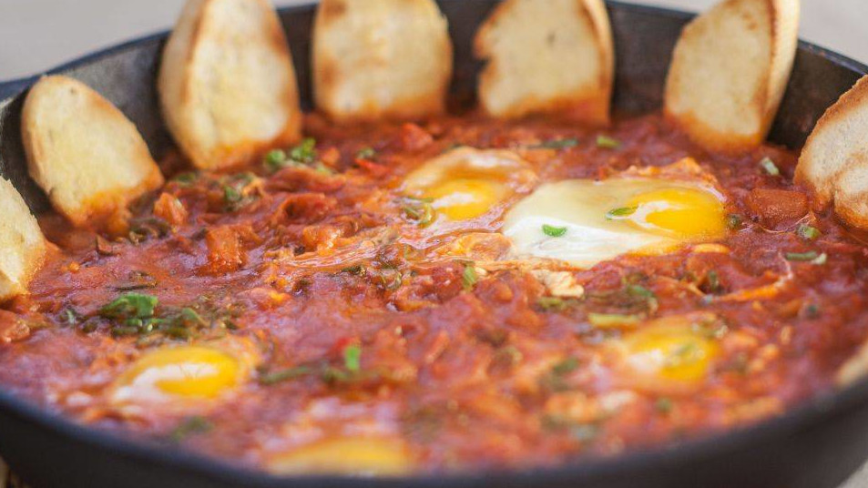
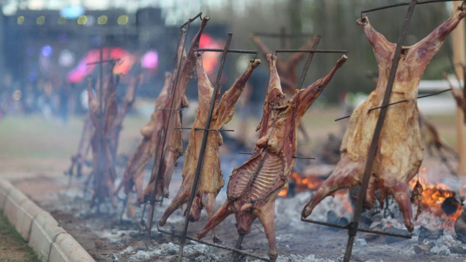
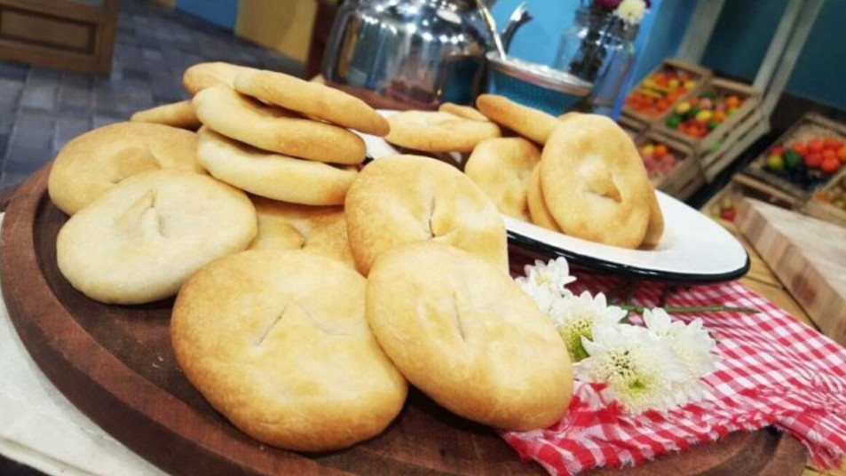

Identidad Gastronómica
Mendoza tiene una identidad gastronómica increíble que va mucho más allá del asado tradicional. Al ser la capital mundial del vino Malbec, su cocina ha evolucionado hacia una fusión entre lo criollo, la herencia inmigrante y los productos de alta montaña.
Platos Fuertes

Tomaticán
Es el plato mendocino por excelencia. Es un guiso rápido de origen huarpe y colonial hecho a base de tomates, cebollas, huevos y, a veces, pan rallado. Es sencillo, reconfortante y utiliza productos típicos de la zona.
Carne a la Olla
Un clásico de las reuniones familiares. Se cocina la carne (generalmente ternera) durante horas en una olla con vino blanco, cebolla, pimientos y especias hasta que se deshace.

Chivito Malargüino
En el sur de la provincia (Malargüe), el chivo es el protagonista. Tiene Denominación de Origen y se suele preparar a la llama o al horno de barro, destacándose por su carne tierna y sabrosa.
Entradas y Tentempiés
Empanadas Mendocinas
A diferencia de las tucumanas o salteñas, la versión de Mendoza se caracteriza por llevar mucha cebolla, ser horneada y, un detalle clave: aceitunas verdes de la región. No suelen ser picantes.


Tortitas Raspadas
No puedes hablar de Mendoza sin mencionar las tortitas para el desayuno o la merienda. Son panificados con grasa que se "raspaban" antes de entrar al horno. También existen las "pinchadas" y las de hoja.
Ingredientes de Identidad Regional

Aceite de Oliva
Mendoza es
uno de los principales productores del país. Mencionar las "Rutas del Olivo" le da mucho
valor al texto.

Frutos Secos y Desecados
Nueces del Valle de Uco, almendras y ciruelas desecadas son fundamentales en la economía
y cocina local.Frutos Secos y Desecados: Nueces del Valle de Uco, almendras y ciruelas
desecadas son fundamentales en la economía y cocina local.

Aperitivos y Destilados
Si bien el vino es el rey,
los vermuts
artesanales y las destilerías de montaña están ganando mucho terreno.
Experiencias Gastronómicas

Almuerzos en Bodegas
Es la tendencia más fuerte. Menús de pasos maridados con diferentes varietales frente a la Cordillera de los Andes.

Cocina de Fuegos
Gracias a chefs de renombre internacional, la cocina técnica con leña y brasas se ha vuelto una firma registrada de la provincia.